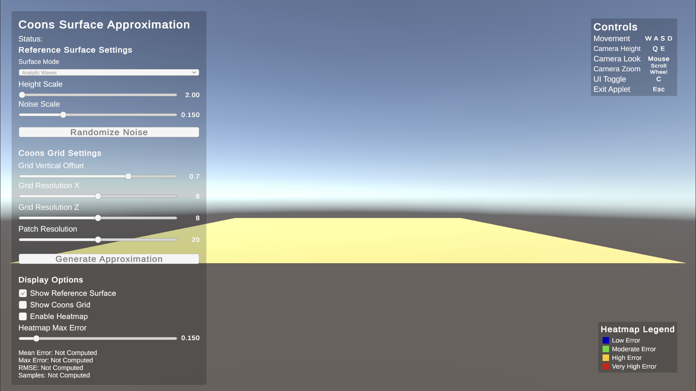
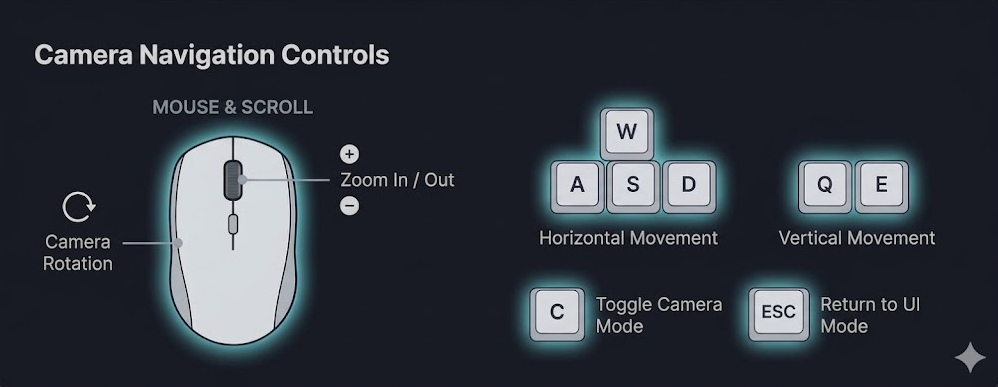
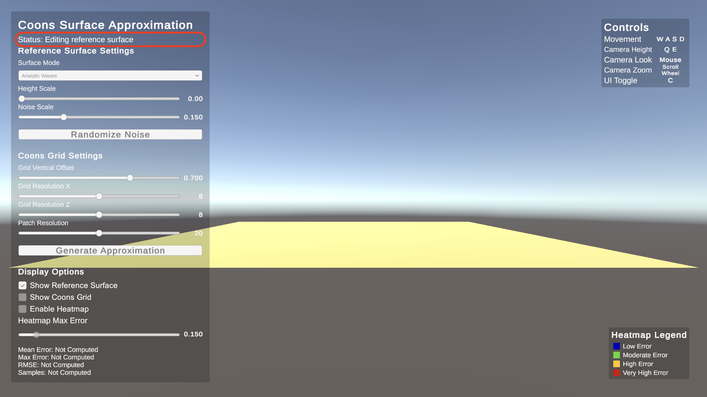
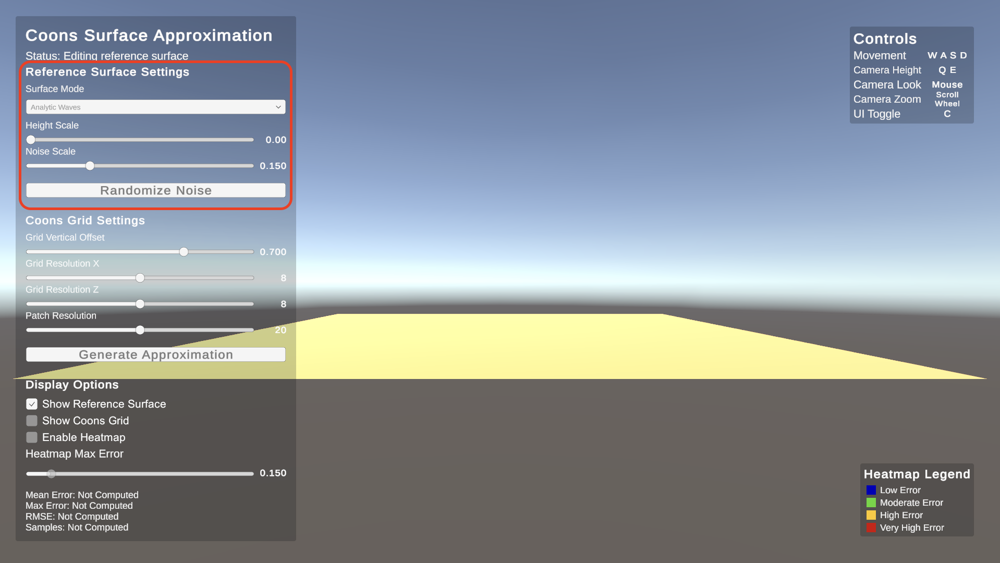
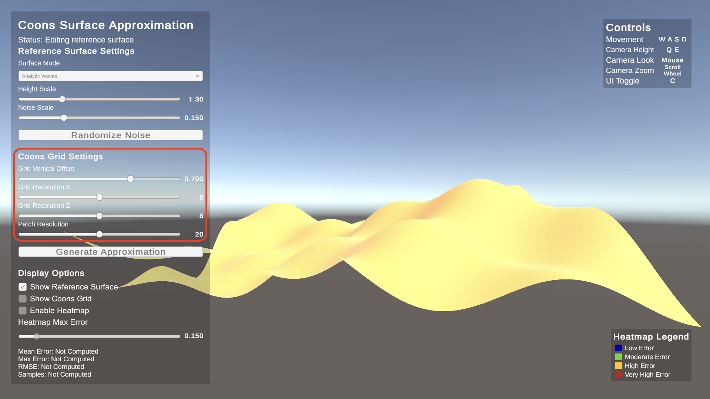
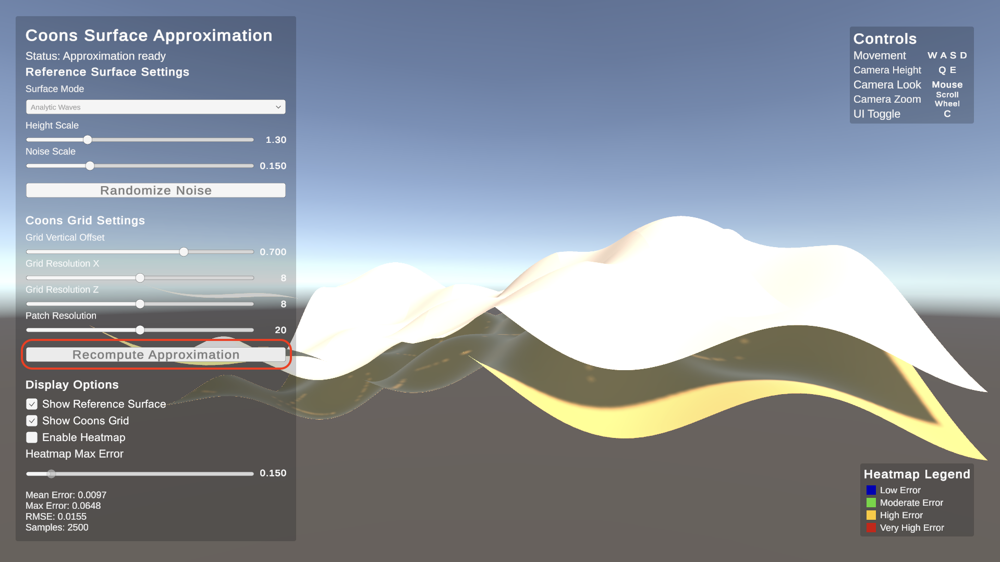
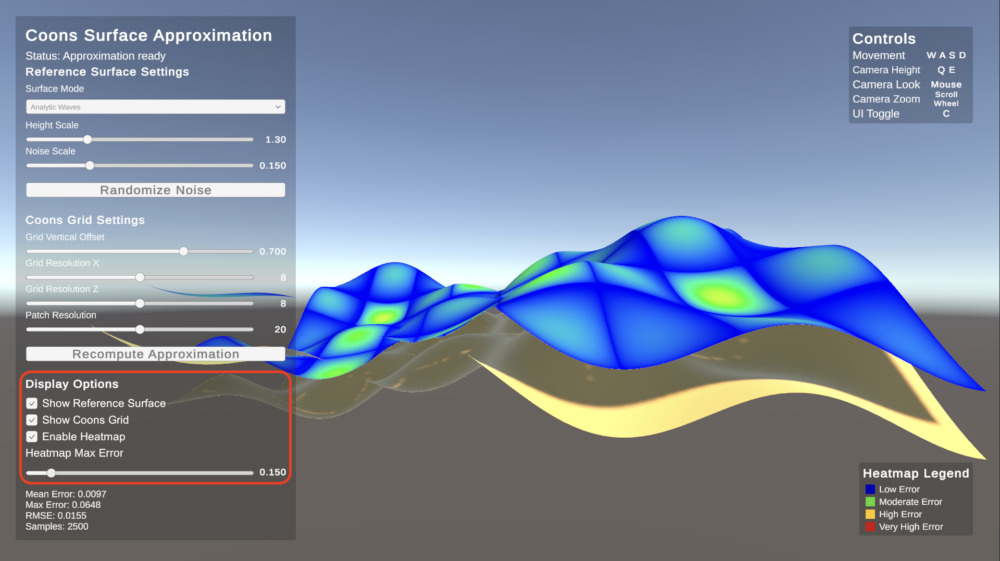
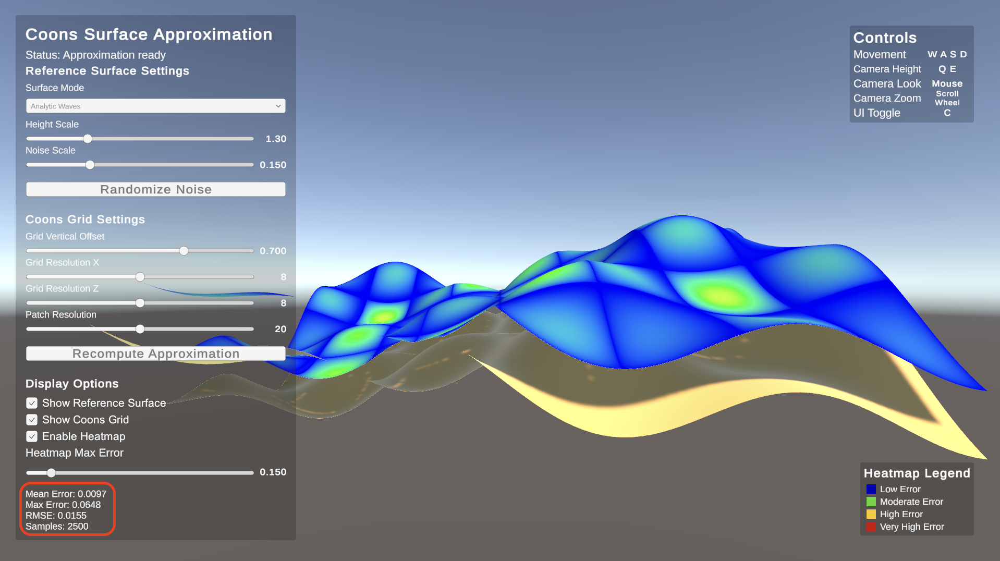

User Manual
This section explains in detail how to use the applet.
The goal is to allow even a first-time user to clearly understand
what is shown on screen, which controls are available, and which
operations must be performed to generate and analyze the surface
approximation using Coons patches.
Application initial screen
The following image shows exactly what the user sees when the application starts.

As soon as the applet opens, the window is already divided into several
clearly distinct areas, all visible at the same time. The user does not
need to look for hidden menus or open additional panels to begin.
On the left side the main interface panel is always visible.
This panel contains all the controls required to use the application:
reference surface selection, surface parameters, Coons grid parameters,
the approximation generation button, display options, and numerical error values.
At the top right the Controls box is always visible.
This box is a constant reminder of the camera movement commands and the most
important keys. It helps the user remember how to move through the scene
and how to switch from camera control to UI interaction.
At the bottom right the Heatmap Legend box is always visible.
This box shows the meaning of the colors used in the error heatmap.
Even when the heatmap is not active, the legend remains visible as a constant reference.
At the center of the screen the 3D view of the scene is displayed.
In this area the user can observe the reference surface, the generated
approximation, the Coons grid, and the heatmap coloring when enabled.
All results produced by modifications made in the left panel are shown here.
It is important to note that during normal use of the applet these elements
always remain visible on screen: the left panel, the controls box, and the
heatmap legend are not hidden during operation.
Movement and interaction controls
Before modifying the surface parameters, it is important to understand
how to move inside the 3D scene and how to switch correctly from
camera control to interface interaction.
- W A S D: move the camera on the horizontal plane
- Q / E: move the camera up and down
- Mouse: rotates the view when camera control is active
- Mouse scroll: zooms in and out
- C: switches between camera control and UI interaction, and vice versa

When the applet starts, the mouse is used to control the camera.
This means that moving the mouse changes the scene view.
In this mode, the pointer is not free to click normally on interface elements.
When the user wants to modify a parameter in the left panel,
they must press C. Pressing this key
releases the mouse from camera control and makes it
available for UI interaction. In this way the user can click menus,
move sliders, enable checkboxes, and press buttons.
After finishing the interaction with the interface, the user can press
C again to reassign the mouse to camera control.
From that moment on, the mouse once again rotates the scene view.
It is very important to understand that the C key does not
hide any menu and does not change the visibility of the interface.
Its only purpose is to change mouse behavior:
- first press of C: the mouse is released from the camera and can be used for the UI;
- second press of C: the mouse returns to camera control.
For a first use, it is recommended to try this step immediately:
first move the camera, then press C to click on the interface,
and finally press C again to return to scene navigation.
Status indicator
The Status field in the left panel indicates the current
state of the application and helps the user understand when the
approximation needs to be recomputed.
-
Editing reference surface
Initial status when the application starts. It indicates that the user
is editing the reference surface and that the approximation has not yet been generated.
-
Approximation Ready
Indicates that the approximation has been generated and is up to date
with the current parameters.
-
Surface changed, recomputation required
Appears when the reference surface is modified after the approximation
has already been generated. The user must press
Recompute Approximation to update the approximated surface.

Reference surface
The reference surface is the initial surface that the application uses as
the model to approximate. All subsequent analysis starts here.
First the surface is defined, then its approximation is generated
using Coons patches.
At application startup, the surface is initialized with the following default values:
- Surface Mode: Analytic Waves
- Height Scale: 0 (initially flat surface)
- Noise Scale: not used in Analytic Waves mode
With these initial parameters, the reference surface is completely flat.
The user can then modify the parameters to introduce variations and
observe how the approximation changes.
Available parameters
-
Surface Mode:
Selects the type of reference surface to generate.
The available modes are:
- Analytic Waves (default)
- Perlin Noise
- Layered Perlin Noise
Depending on the selected mode, the shape of the surface changes noticeably.
-
Height Scale:
Controls how much the surface develops vertically. Small values
produce a flatter surface, while higher values produce more pronounced
peaks and depressions. With value zero, the surface is completely flat.
-
Noise Scale:
This parameter is active only when the selected mode is
Perlin Noise or Layered Perlin Noise.
In these modes it controls the distribution of noise on the surface.
In Analytic Waves mode this parameter has no effect.
-
Randomize Noise:
This button is used exclusively in
Perlin Noise and Layered Perlin Noise modes.
Pressing it generates a new random noise configuration.
In Analytic Waves mode the button does not modify the surface.
In general, surfaces with more irregular details, faster variations,
or stronger height changes are more difficult to approximate with a coarse grid.

Coons grid settings
After selecting the reference surface, the user must set the grid used
to construct the approximation. The domain is subdivided into a rectangular
grid, and each grid cell corresponds to one Coons patch.
Available parameters
-
Grid Vertical Offset:
Defines the vertical distance between the reference surface and the
approximated surface. This parameter does not modify the mathematical
quality of the approximation, but is used only to visually separate
the two surfaces and avoid overlap that would make comparison difficult.
-
Grid Resolution X: and Grid Resolution Z
Define the number of subdivisions of the domain along the X axis and
the Z axis respectively. Increasing these values:
- makes the patches smaller;
- makes the grid denser;
- generally improves the approximation;
- increases computational cost.
-
Patch Resolution:
Controls the density of the mesh used to display each patch.
This parameter mainly affects the visual appearance of the rendered
surface, making it smoother or more detailed, but it does not modify
the mathematical definition of the patch.

Generating the approximation
After defining the reference surface and the grid parameters,
the user must press the Generate Approximation button.
This step is essential.
Pressing this button causes the application to:
- read the currently selected parameters;
- build the Coons grid;
- generate the approximated surface;
- update the numerical error values.
After the first generation, the button changes its state and is displayed as
Recompute Approximation. This indicates that the
approximation can be recalculated after modifying parameters.
Once the approximation has been generated, some grid parameters,
such as resolution and vertical offset, can be modified and the result
is updated in real time on the approximated surface.
This allows the user to immediately observe the effect of the changes.
If instead the parameters of the reference surface are modified,
the approximation is not updated automatically. In this case, the
Status field displays the message:
Surface changed, Recomputation Required
This indicates that the reference surface has changed and that the user
must press Recompute Approximation again in order to update
the approximated surface according to the new parameters.
After generation, the result can be observed directly in the 3D scene
and analyzed through the display options and the numerical error values shown in the panel.

Display options
The Display Options section allows the user to control
which elements are visible in the scene. These options are useful for
comparing the reference surface with the approximation and for analyzing error.
Available parameters
-
Show Reference Surface
Shows or hides the reference surface. When disabled, it becomes easier
to observe the approximated surface more clearly.
-
Show Coons Grid
Shows or hides the Coons grid. When enabled, it makes the subdivision
of the domain into individual patches visible.
-
Enable Heatmap
Enables coloring of the approximated surface according to the local
approximation error. This makes it immediately visible in which areas
the approximation is better and in which areas it is worse.
-
Heatmap Max Error
Controls the maximum range used for heatmap coloring.
This parameter does not modify the real error, but only changes
how the error is represented visually.
By combining these options, the user can directly compare the original
surface with the approximated one and visually analyze the distribution of error.

Heatmap interpretation
When the heatmap is active, the colors on the surface represent the local
approximation error. The legend visible in the application helps the user
read these colors correctly.
- Blue: low error
- Green: moderate error
- Yellow: high error
- Red: very high error
In general, blue regions indicate areas where the approximated surface
follows the reference surface well, while red regions indicate areas where
the difference is greater.
The legend always remains visible on the right side of the screen as a
constant reference for the user.
Error analysis
Once the approximation has been generated, the applet compares the
approximated surface with the reference surface by computing the error
over a set of sampled points.
- Mean Error: average error
- Max Error: maximum error
- RMSE: root mean square error
- Samples: number of samples used for the computation
These values provide a quantitative evaluation of the approximation quality.
A heatmap can help show where the error is higher, but these numerical values
provide a direct quantitative comparison.
If the fields display Not Computed, it means that the
approximation has not yet been generated or that the analysis is not yet available.

Recommended procedure for first use
A user opening the application for the first time can follow the steps
below to quickly understand the general workflow and obtain a correct first approximation.
- Start the applet and observe the initial screen.
-
Identify the three main elements:
the control panel on the left, the controls box at the top right,
and the heatmap legend at the bottom right.
-
Move the camera using W, A, S, D, Q, E, the mouse, and the mouse wheel
to explore the scene.
-
Press C to release the mouse and interact with the interface.
-
Choose the type of reference surface.
-
Adjust the surface parameters.
-
Set the Coons grid parameters.
-
Press Generate Approximation to generate the approximation.
-
Use the display options to compare the approximated surface with the reference surface.
-
Enable the heatmap and inspect the numerical error values if needed.
-
Press C again to return to camera control and explore the scene.
This sequence represents a typical usage flow and allows the user
to quickly understand all the main features of the application.
For a practical demonstration, visit the
Applet.